library(tidyverse)
library(palmerpenguins)Plotting 4: Faceting and multi-panel figures
plotting
ggplot2
1 Introduction
In this last session of the semester, we’ll cap off our series on ggplot2 basics with a focus on:
- Faceting plots: splitting plots into subplots based on one or more variables
- Combining plots into multi-panel figures with the patchwork package
And two useful side-notes:
- Setting a plotting theme for your entire R session
- Saving plots to file with
ggsave()
Like in previous sessions, we’ll start by loading the tidyverse and palmerpenguins packages:
2 Setting a theme for all plots in the session
We’ve seen that you can change the “theme” (overall look) of a ggplot plot by adding a layer like theme_bw(). If you’re making a bunch of plots, and want all them to have a specific theme, it can be more convenient to set the plotting theme upfront for all plots in your current R session — you can do so with the theme_set() function:
theme_set(theme_bw())One other tidbit worth pointing out is that you can set the “base size” for a theme, which is the relative size of the text and lines. You may have noticed that the ggplot’s font size of e.g. axis labels and titles is relatively small. Instead of changing all of these individually with arguments to theme(), you can use the base_size argument when specifying the overall theme:
# (The default base_size is 11)
theme_set(theme_bw(base_size = 12))Finally, you can set any theme() arguments for all plots in the R session with theme_update() — for example, we may want to turn off the minor grid lines:
theme_update(panel.grid.minor = element_blank())After doing this, as you’ll see, all plots in this session will feature theme_bw without minor grid lines.
3 Faceting: intro and facet_wrap()
An example with one variable
Let’s start by revisiting the following plot you made in the exercises a couple of weeks ago:
penguins |>
ggplot(aes(x = body_mass_g, y = flipper_length_mm, color = species)) +
geom_point()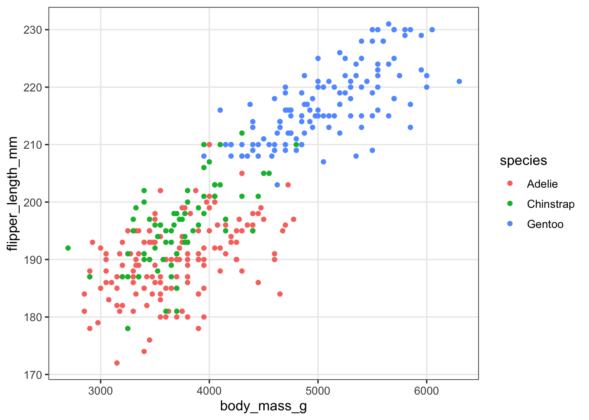
We’ve used the color aesthetic to distinguish species, but because of the overlap between Adelie (red) and Chinstrap (green) penguins, it’s not that easy to see the relationship between body mass and flipper length for these two species.
An alternative to using aesthetics such as color or shape to distinguish between levels of categorical variables is to split the plot into subplots/panels. In ggplot, such subplots are called “facets”, and there are two functions to split a plot into facets: facet_wrap() and facet_grid().
Let’s start with facet_wrap(). Facets are added as an additional layer to the plot, and in the faceting function, you specify one or more variables to split the plot into separate panels by. Here, we want to facet by species:
penguins |>
ggplot(aes(x = body_mass_g, y = flipper_length_mm, color = species)) +
geom_point() +
# Add the facet_wrap layer:
facet_wrap(~species) +
# We still color by species to make the plot look nicer, but no longer need a legend:
theme(legend.position = "none")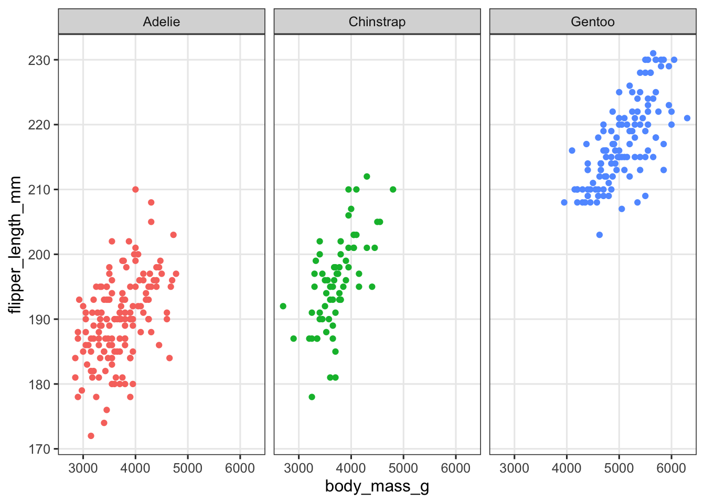
facet_wrap() syntax
Note how the variable to facet by is specified: with a tilde (~) in front, which is R’s way of specifying formulas. We’re basically saying to split the plot “as a function of” (by) species. An alternative way of specifying the variable is by wrapping the variable name in vars(), e.g. facet_wrap(vars(species)).
An example with two variables
In the above example, you may reasonably prefer either of the two plots we made. For example, perhaps you aren’t convinced by the faceting solution because you thought the overlapping points in the first plot were useful to make clear how similar Adelie and Chinstrap penguins are in body mass and flipper length.
What may be a more straightforward example of the usefulness of faceting is a situation in which we want to show two or more categorical variables in a plot, like species and island below:
penguins |>
ggplot(aes(x = body_mass_g, y = flipper_length_mm,
color = species, shape = island)) +
geom_point()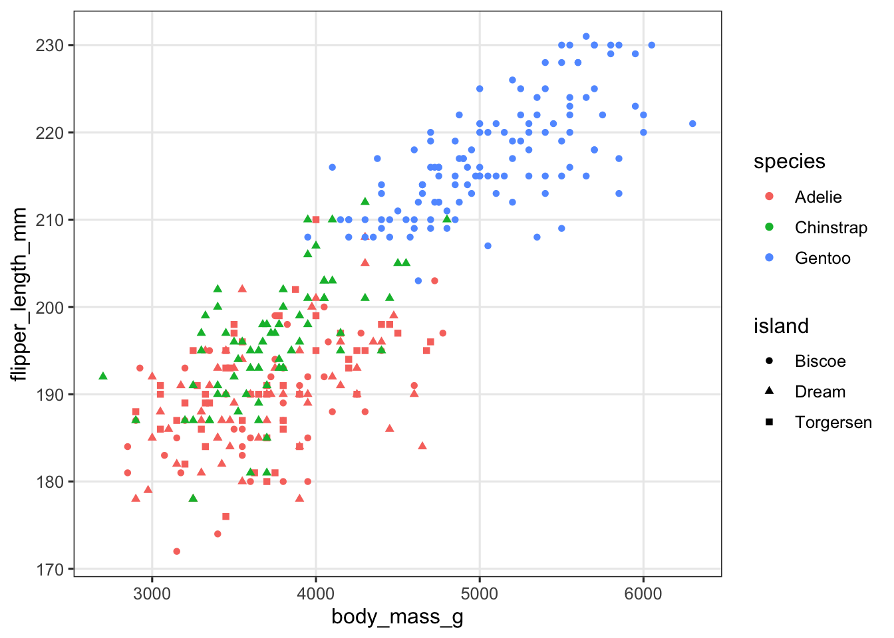
This plot isn’t clear at all! Let’s facet by island to get a much better plot:
penguins |>
ggplot(aes(x = body_mass_g, y = flipper_length_mm, color = species)) +
geom_point() +
facet_wrap(~island) +
theme(legend.position = "top")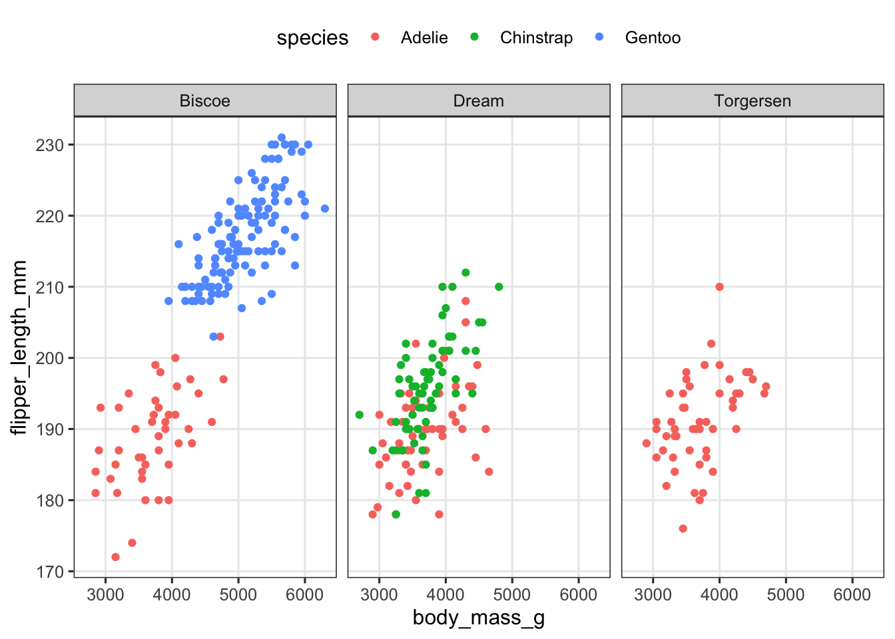
Exercise 1
A) Create a scatter plot of bill length vs. bill depth with points colored by sex, and the plot faceted by species.
(Click for the answer)
penguins |>
ggplot(aes(x = bill_length_mm, y = bill_depth_mm, color = sex)) +
geom_point() +
facet_wrap(~species) +
theme(legend.position = "top")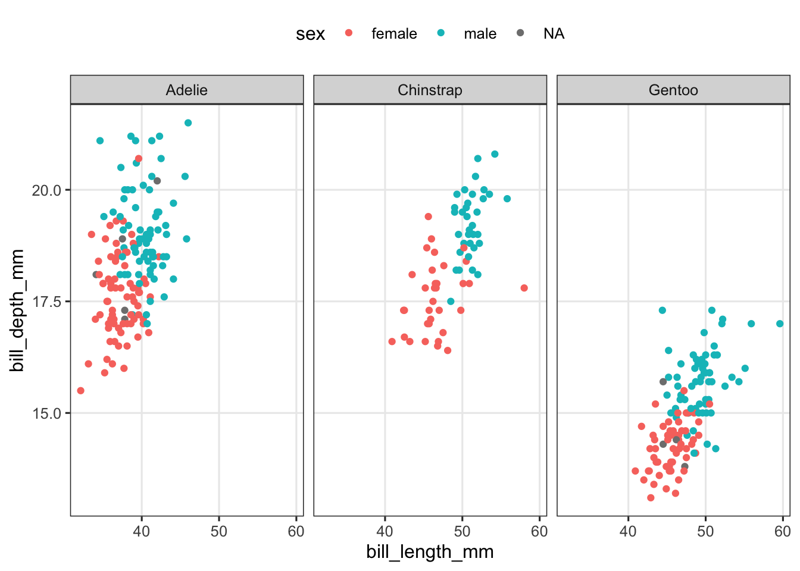
B) Say that you didn’t want the species side-by-side (1 row, 3 columns), but stacked vertically (3 rows, 1 column). Take a look at the help page for facet_wrap() (type ?facet_wrap) and try to figure out how you can do this.
(Click for the answer)
You can use the ncol and/or nrow arguments to force a specific number of rows and or columns. The easiest solution here is to merely set the number of columns to 1, which will make facet_wrap() use multiple columns instead:
penguins |>
ggplot(aes(x = bill_length_mm, y = bill_depth_mm, color = sex)) +
geom_point() +
facet_wrap(~species, ncol = 1)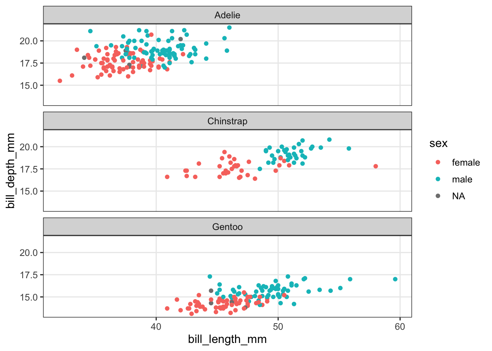
Exercise 2
In our first example, we faceted because there was too much overlap between points. You may also want to facet for the opposite reason, when differences by some variable are so large that the plot suffers from it. Let’s artificially create such a situation by increasing the bill lengths for Chinstrap penguins by 100 mm each:
penguins_ed <- penguins |>
mutate(bill_length_mm = ifelse(species == "Chinstrap",
bill_length_mm + 100,
bill_length_mm))And plot this modified data:
penguins_ed |>
ggplot(aes(x = bill_length_mm, y = bill_depth_mm, color = species)) +
geom_point()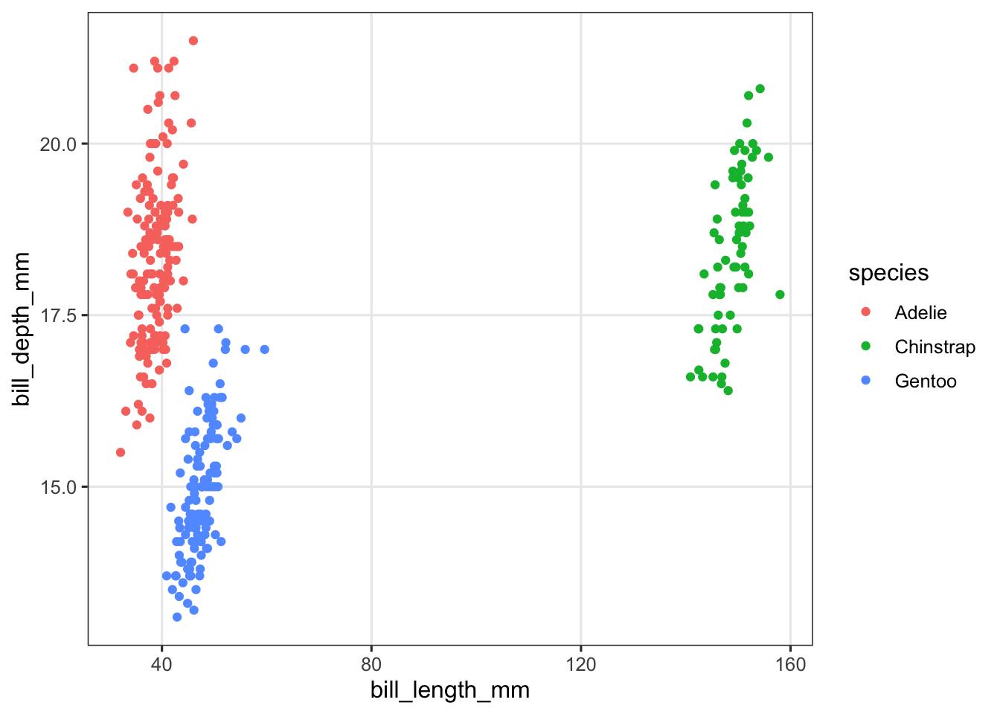
Above, the spread along the x axis (bill length) is so large that it has become hard to see the relationship between bill length and bill depth. Let’s facet:
penguins_ed |>
ggplot(aes(x = bill_length_mm, y = bill_depth_mm, color = species)) +
geom_point() +
facet_wrap(~species) +
theme(legend.position = "none")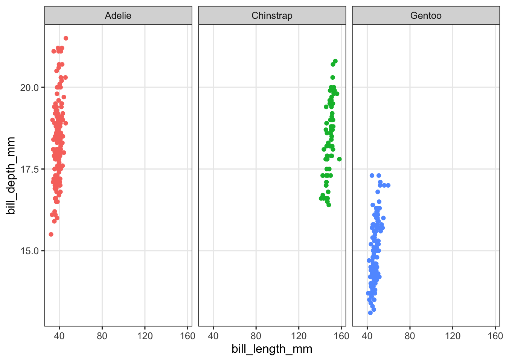
That didn’t solve anything yet! But when you facet, you can have the axis ranges (“scales”) vary independently between facets. This can be done with the scales argument to facet_wrap(). Take a look at the help page and try to get the x-axis range to be able to differ between the facets.
(Click for the answer)
You’ll want to set scales to free_x:
penguins |>
mutate(bill_length_mm = ifelse(species == "Chinstrap",
bill_length_mm + 100,
bill_length_mm)) |>
ggplot(aes(x = bill_length_mm, y = bill_depth_mm, color = species)) +
geom_point() +
facet_wrap(~species, scales = "free_x") +
theme(legend.position = "none")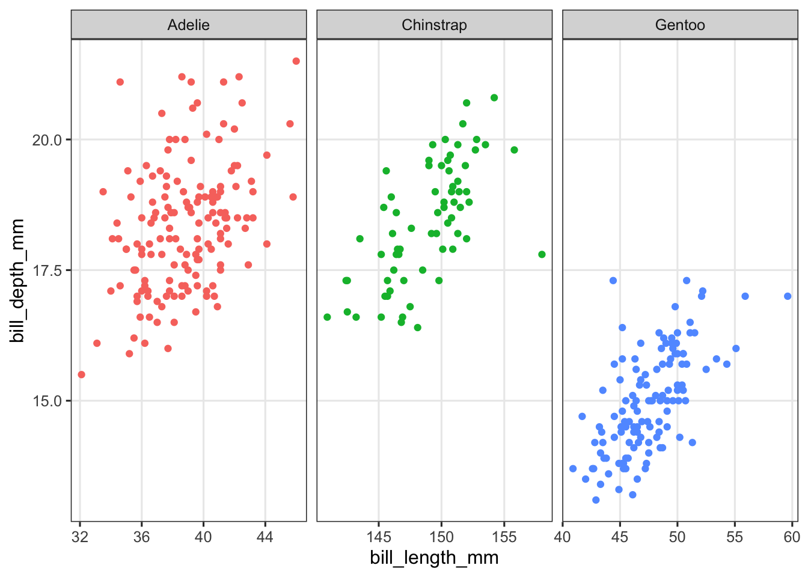
Exercise 3
In your theme_set() call, vary the value of base_size and take a look at its effect by recreating the plots you made above a few times.
4 facet_grid()
If you would like to split your plot by two variables, use the facet_grid() function, which will create a grid with the levels of one variable across rows and of the other variable across columns.
The formula-style syntax now uses row-variable ~ column-variable:
penguins |>
filter(!is.na(sex)) |>
ggplot(aes(x = body_mass_g, y = flipper_length_mm, color = species)) +
geom_point() +
facet_grid(island ~ sex) +
theme(legend.position = "none")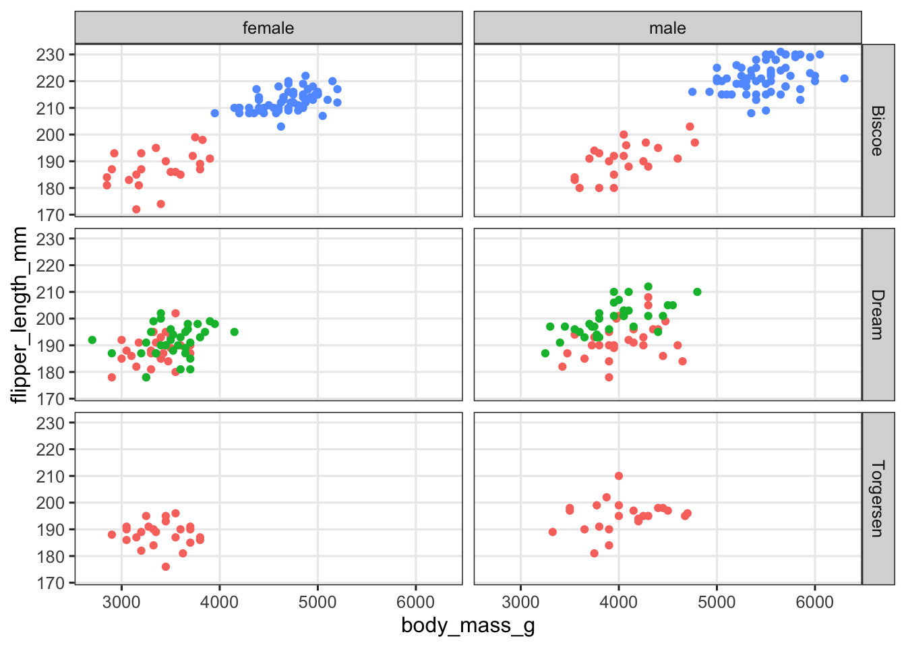
facet_wrap() vs. facet_grid() (Click to expand)
Note that you can also tell facet_grid() to facet only by one variable, either across rows or across columns. With that in mind, you may wonder why there even is a separate facet_wrap() function.
Well, one feature of facet_wrap() that we haven’t yet seen is that it can “wrap” a single variable across both rows and columns. Here is an example with the mpg data set, which has a categorical value cyl with 4 levels, enough to make facet_wrap() spread these across 2 rows and 2 columns:
ggplot(mpg, aes(x = displ, y = hwy)) +
geom_point() +
facet_wrap(~cyl)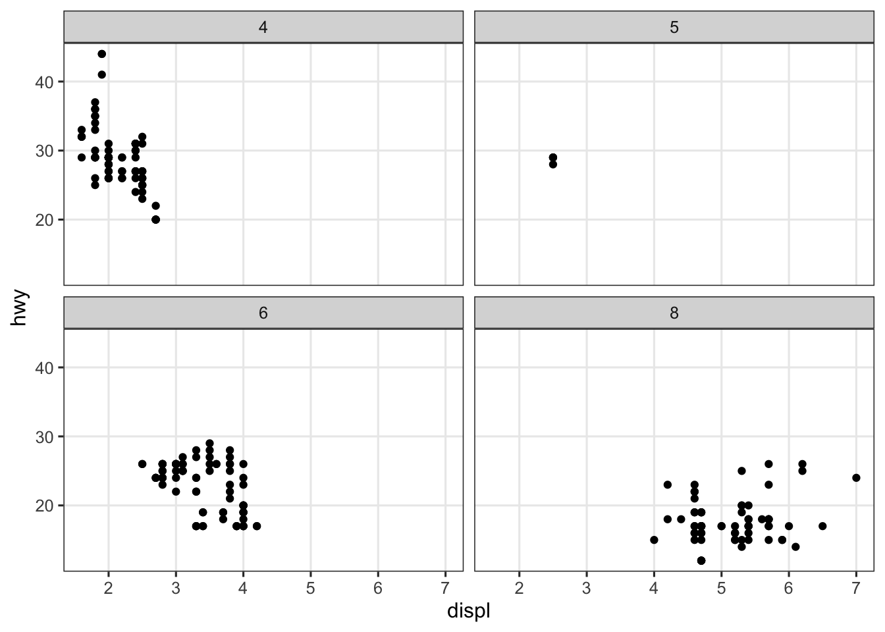
Exercise 4
Create a scatter plot of bill length vs. bill depth and facet in a grid with the variables species and year.
(Click for the answer)
penguins |>
ggplot(aes(x = bill_length_mm, y = bill_depth_mm, color = species)) +
geom_point() +
facet_grid(species~year) +
theme(legend.position = "none")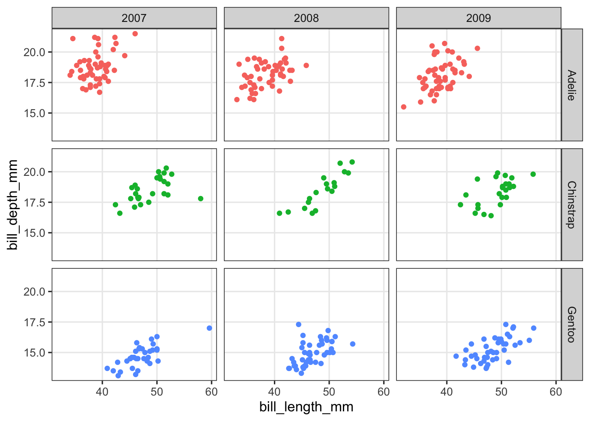
5 Multi-panel figures with patchwork
The patchwork package allows you to combine multiple plots into a single multi-panel figure.
This is something you might be used to doing with programs like Powerpoint or Illustrator. But certainly if all the individual plots that should make up a figure are made with R, it is highly beneficial to combine them in R as well. One of the advantages of using R is that you can easily rerun your code to recreate plots with some modifications, but if after any change, you have to put plots together in another program, you lose some of the advantages related to automation and reproducibility.
Let’s install and then load the package:
install.packages("patchwork")library(patchwork)Patchwork assumes that you have created and saved the individual plots as separate R objects. Then, you tell patchwork how to arrange these plots, and the syntax to define the layout is based on common mathematical operators. Some examples, where plot1, plot2, and plot3 represent plots that have been saved as objects with those names:
plot1 | plot2puts two plots side-by-sideplot1 / plot2stacks two plots verticallyplot1 / (plot2 | plot3)gives plot1 on a top row, and plots 2 and 3 on a bottom row
Below is an example from palmerpenguins. First we create the plots, saving each as a new object:
p_scatter <- penguins |>
ggplot(aes(x = bill_length_mm, y = bill_depth_mm)) +
geom_point() +
facet_wrap("species")
p_scatter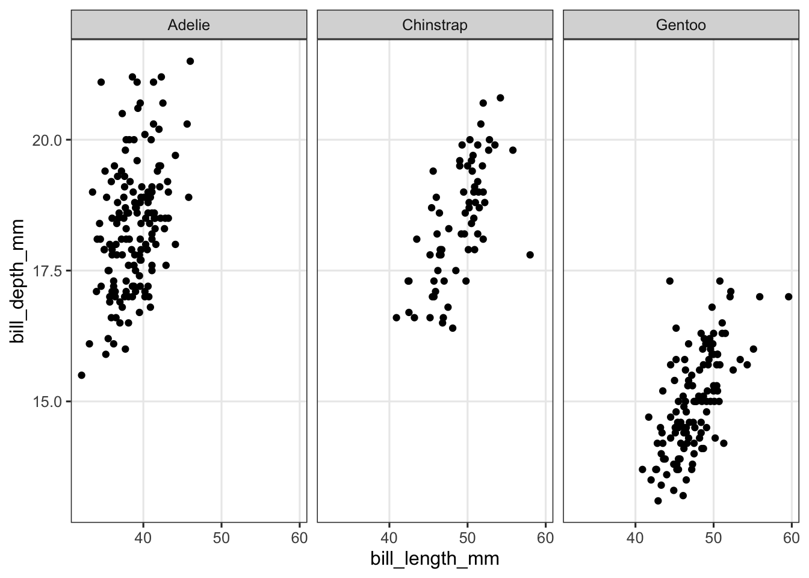
p_bar <- penguins |>
summarize(bill_length = mean(bill_length_mm, na.rm = TRUE), .by = island) |>
ggplot(aes(x = island, y = bill_length)) +
geom_col()
p_bar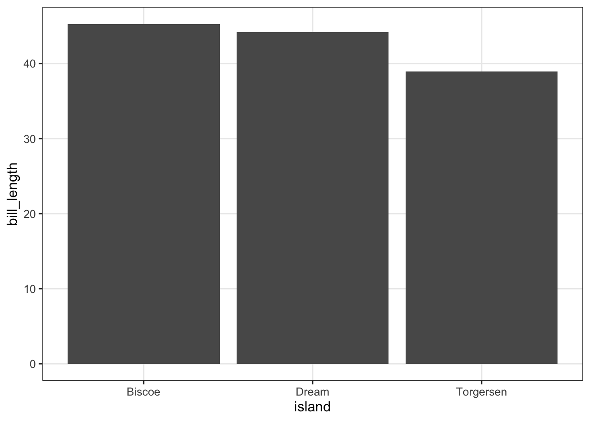
p_box <- penguins |>
drop_na() |>
ggplot(aes(x = sex, y = body_mass_g)) +
geom_boxplot()
p_box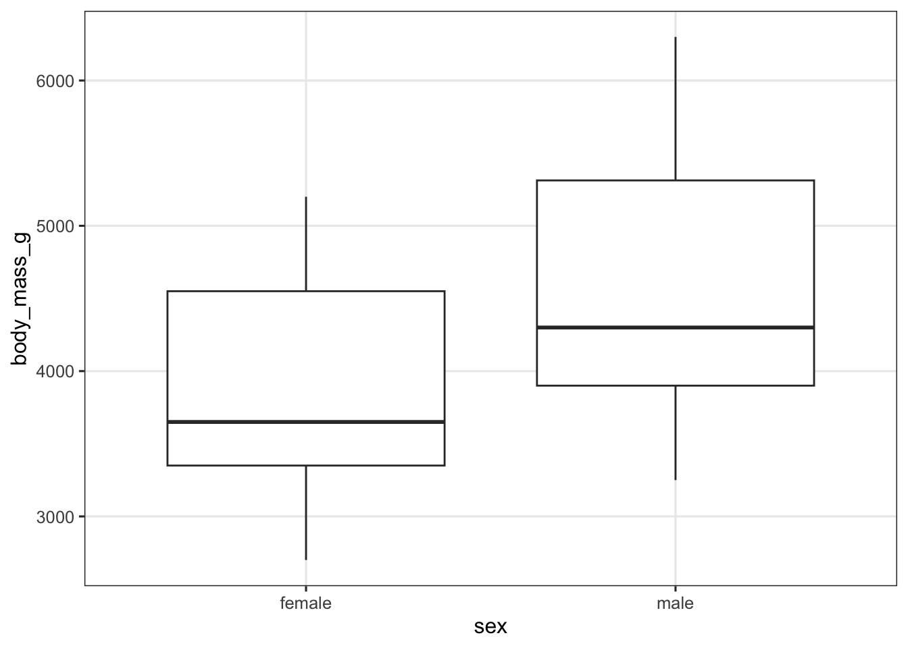
Then we simply use the patchwork syntax to define how these 3 plots will be arranged. In this case, the first (faceted) plot on top, with the other two side-by-side below it:
p_scatter / (p_bar | p_box)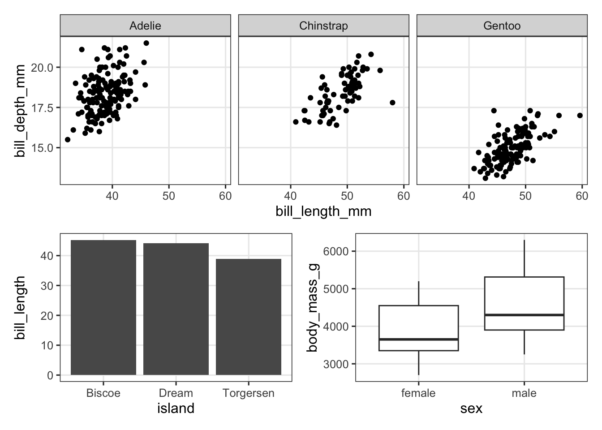
Patchwork has quite a lot more functionality, and this is very well explained in various vignettes/tutorials on its website. Here, we’ll just try one more feature, adding tags for the individual plots — where we tell patchwork about the type of numbering we would like (e.g. A-B-C vs. 1-2-3) by specifying the first character:
p_scatter / (p_bar | p_box) +
plot_annotation(tag_levels = "A")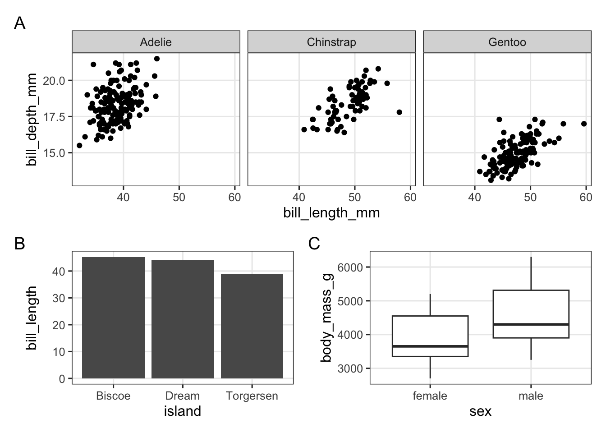
Exercise 5
Use the palmerpenguins data to try to create the plot below:
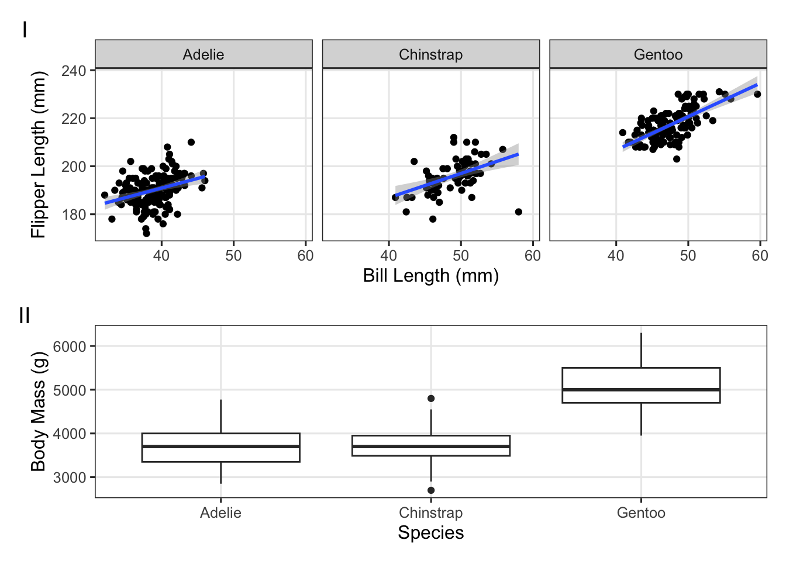
(Click for the answer)
p_bill_flipper <- penguins |>
ggplot(aes(x = bill_length_mm, y = flipper_length_mm)) +
geom_point() +
facet_wrap(~species) +
geom_smooth(method = "lm") +
labs(x = "Bill Length (mm)", y = "Flipper Length (mm)")
p_mass_yr <- penguins |>
ggplot(aes(x = species, y = body_mass_g)) +
geom_boxplot() +
labs(x = "Species", y = "Body Mass (g)")
p_bill_flipper / p_mass_yr +
plot_annotation(tag_levels = 'I')5.1 Saving plots
If you hadn’t already, now that you’ve learned to create publication-ready multi-panel figures, you are probably wondering how you can save these plots.
Perhaps you’ve seen the “Export” button in the plotting pane, which can can do this. However, a better and more flexible way is to use the ggsave() function. By default, it will save the last plot you produced to the specified file:
ggsave("test_plot.png")If you do need to specify the plot object explicitly, you can pass it as the second argument:
ggsave("test_plot2.png", p_bill_flipper)Some notes:
- You can specify the file/image type (PNG, JPEG, SVG, PDF, etc.) simply by providing the appropriate file extension.
- Use the
heightandwidtharguments to specify both the aspect ratio and the absolute size. Larger sizes will lead to relatively smaller text and points, which can be a convenient way to customize this! - For raster graphic formats like PNG, you can specify the resolution with the
dpiargument.
Exercise 6
Save one or more of your previously produced plots as PNG images, and vary:
- The aspect ratio and asbolute size with
heightandwidth - The resolution with
dpi